1. Instalação da VPN
Acesse o computador do funcionário e faça o download da pasta contendo os arquivos da VPN.
Extraindo os arquivos
Após realizar o download, extraia a pasta.
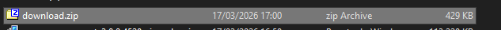
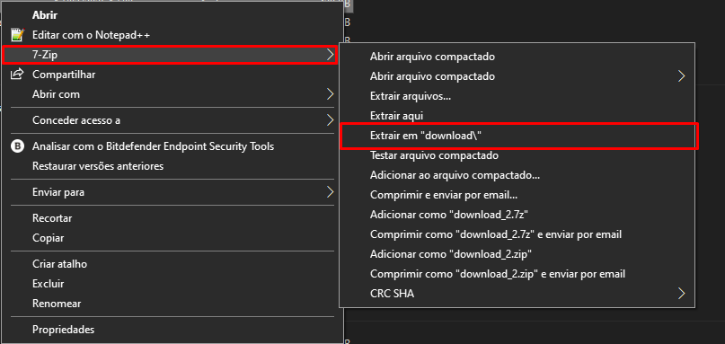
Entre na pasta extraída e extraia também o arquivo xpert-matriz-auth.zip.
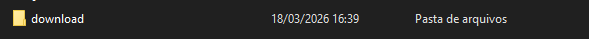
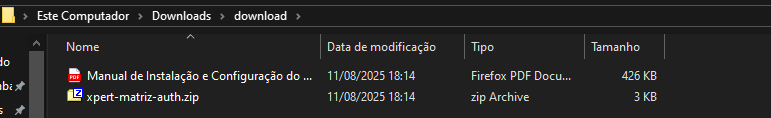
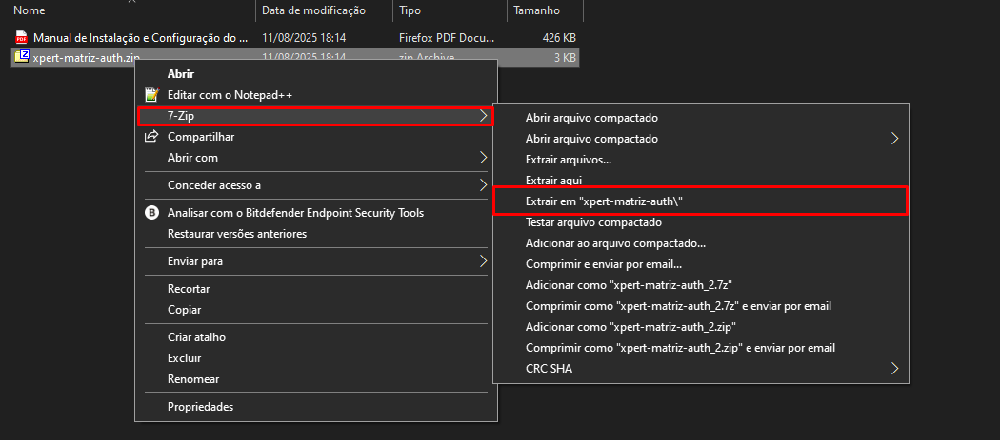
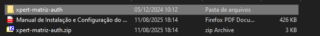
Importando o Perfil
Abra o OpenVPN Connect.
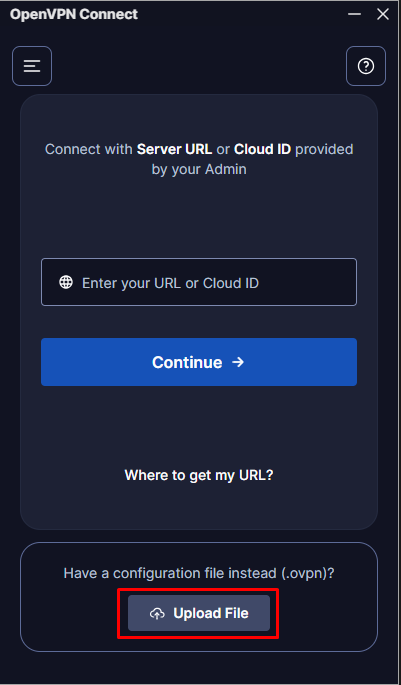
Clique em Upload File.
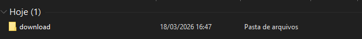
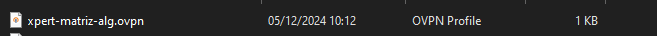
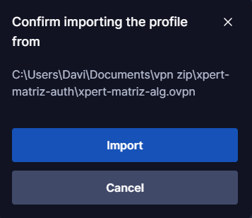
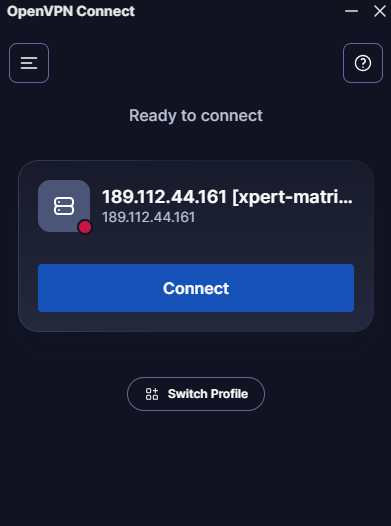
2. Removendo o Certificado
Antes de criar o usuário da VPN, o certificado deve ser removido.
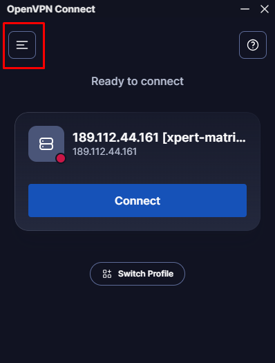
Acesse o menu.
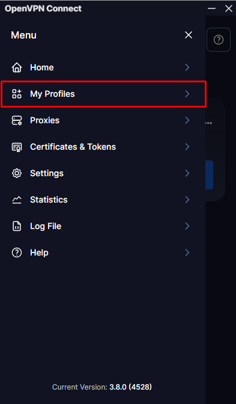
Entre em My Profiles.
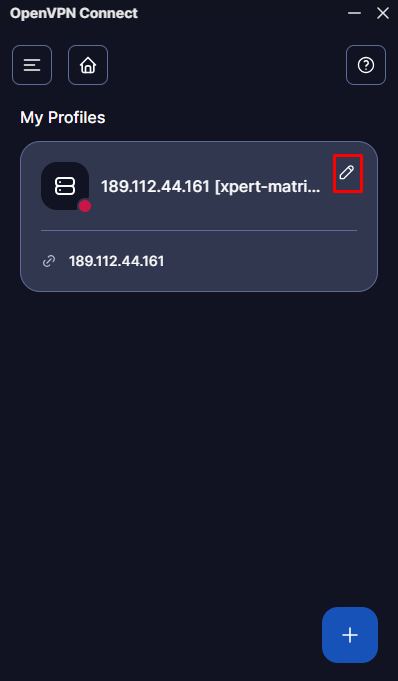
Clique na caneta.
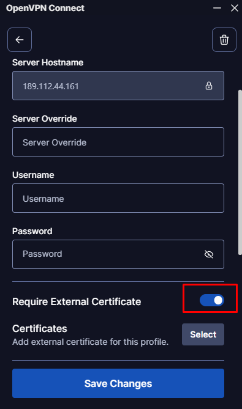
Remova o certificado.
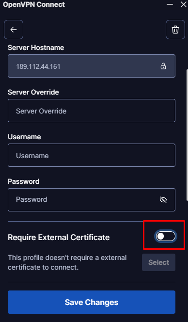
O botão deve permanecer dessa forma.
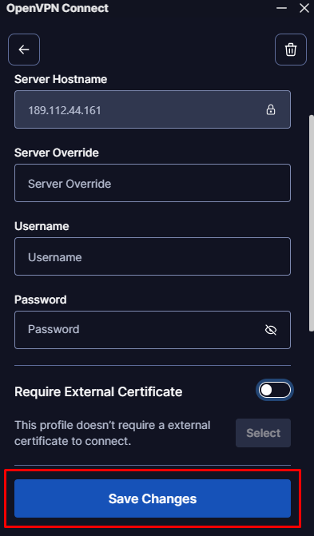
Clique em Save Changes.
3. Configurando o arquivo Hosts
Para acessar corretamente o GitLab e o Cloud da empresa será necessário editar o arquivo hosts do Windows.
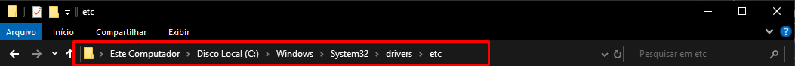
Acesse a pasta.
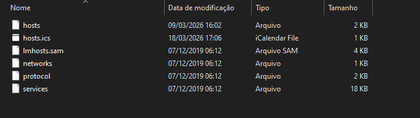
Entre na pasta etc.
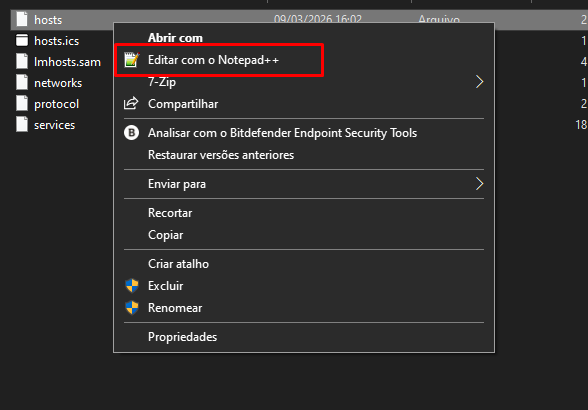
Abra com o Notepad++.
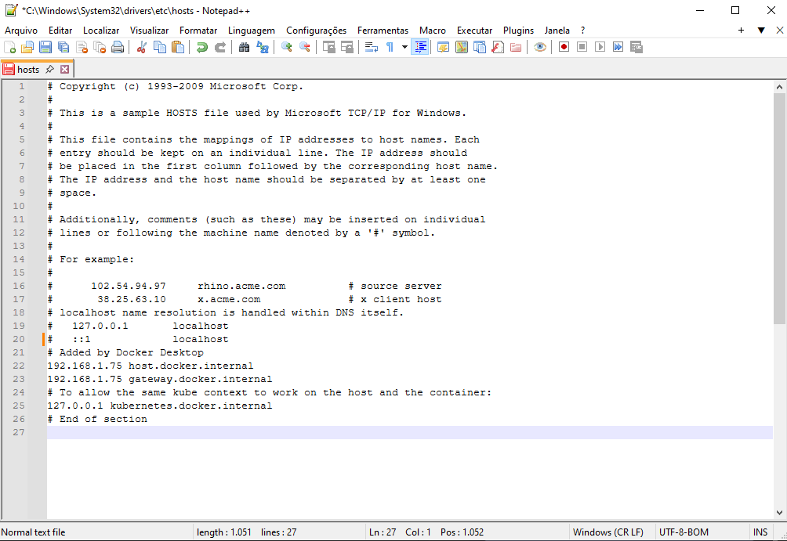
Arquivo original.
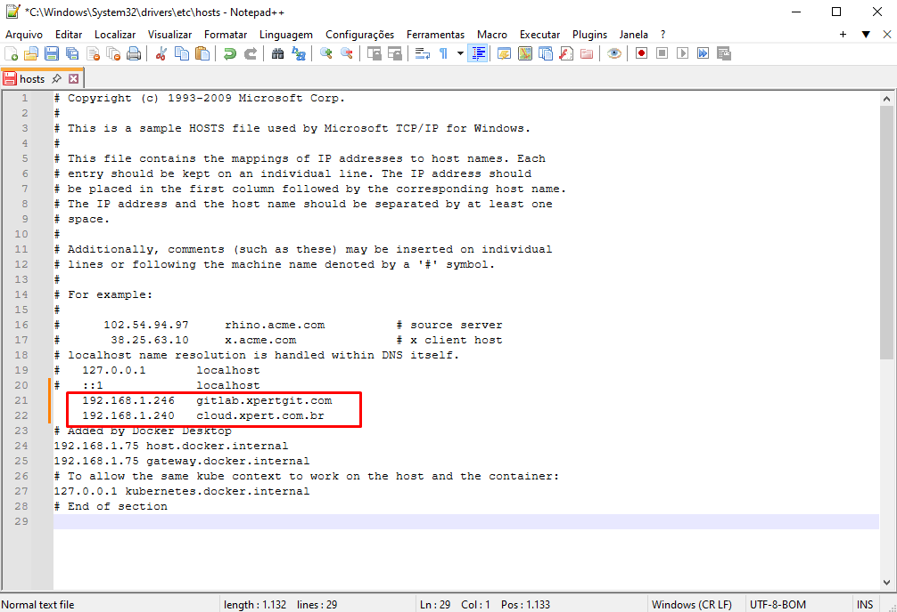
Resultado esperado.
Adicione as seguintes linhas:
192.168.1.246 gitlab.xpertgit.com
192.168.1.240 cloud.xpert.com.br
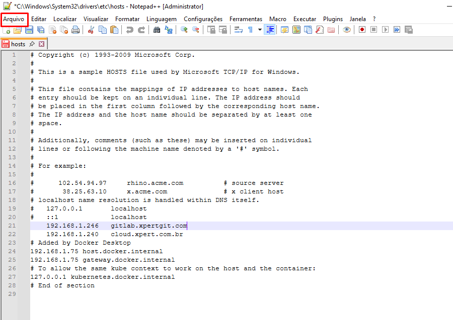
Salvar alterações.
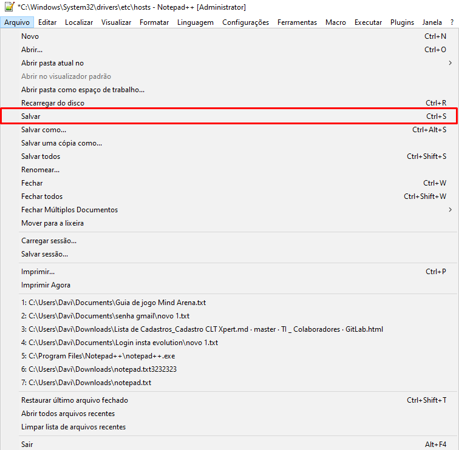
Confirmar a gravação.
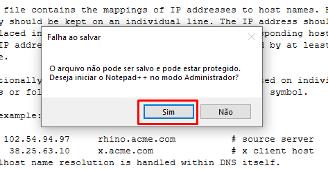
Executar como administrador.